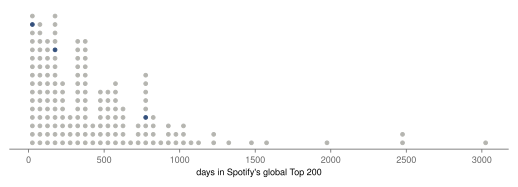
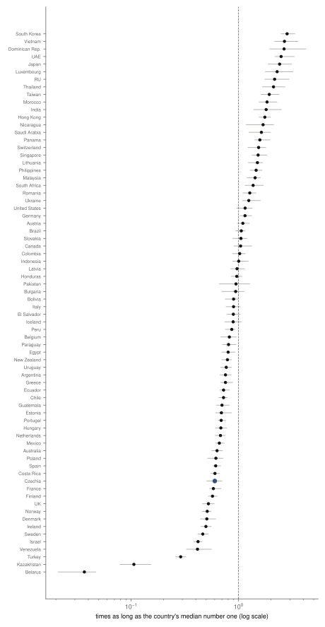
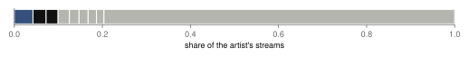
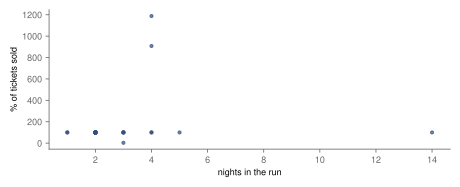
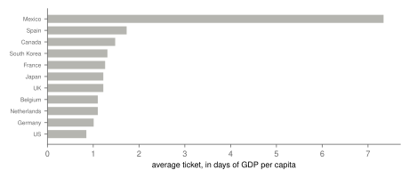

Research · Pop, measured, part 3 · BTS, 2017–2026
BTS, measured: a catalogue, not a hit
Descriptive and registered: Dynamite outlasted 76 % of Spotify's global number ones since 2017 yet is 4 % of BTS's streams, and outlasted local hits in fewer than half of its countries.
- share of BTS's Spotify streams from their biggest song
- 4 % administrative count · 319 songs, Gini 0.64
- global number ones that lasted longer than Dynamite
- 23.8 % 95 % CI 17.5 % to 31.2 % · 165 songs
- Dynamite in Czechia, against the Czech median number one
- 0.6× 95 % CI 0.5–0.7 · 60th of 72
- average ticket in Mexico
- 7.3 days of GDP per capita · $279 · administrative count
Overwhelmed? Here's the short version
- Their biggest hit lasted well, but it is a small slice of what their listeners play: the streams are spread over hundreds of songs.
- The hit lasted longest against local songs in South Korea, Vietnam and Japan, and least in much of Europe, Czechia included.
- Their shows sold out nearly everywhere; the online shows of 2021–2022 are set apart because they mix viewers with the hall.
- A ticket in Mexico cost more than a week of the average income; the same show in the United States cost less than a day.
- Spotify misses most of the Korean market and all of YouTube, so this describes Spotify listeners only.
Photo: Josh Sorenson · CC0, toned
This is the third part of Pop, measured, which asks the same five questions of five artists so that the parts can be read side by side: how long the artist's biggest song lasted against every global number one, where it lasted longest, whether the artist's listening is one song or many, whether longer runs in one venue sold less of their tickets, and what a ticket cost in days of local income. The questions draw on work on the life of chart songs1, on how musicians' income moved to live shows and is spread among them2, on how concert tickets are priced3 and on what streaming did to music sales4. BTS are the series' group and its only act from outside the English-speaking and Latin markets. That matters twice: their fans are known for streaming whole albums on purpose, which should show in how their listening is spread, and their home market runs mostly on Korean services that Spotify's charts do not see, which limits what can be said about Korea itself.
Data
The data are the series' common collection, made once on 1 October 2026. Kworb.net keeps, for the global chart and 76 national Spotify charts, every song that has entered the Top 200 with its days in the chart, its peak and its total streams6, and an artist page with every song's streams. By the series rule, the focal song is the band's song with the most global streams, Dynamite (2020); it peaked at number one. The reference set is the 165 global number ones since 2017 whose start can be seen.
For the tours, the Wikipedia articles on the Love Yourself World Tour (2018–2019), Permission to Dance on Stage (2021–2022) and the Arirang World Tour (2026) list Billboard's Boxscore figures7. Two kinds of entry are set apart, by rules added after the results were first computed. Two entries of 2018 give one total for several venues, a leg rather than a run, and are left out of the question about runs (2). Three entries of Permission to Dance count online viewers together with the hall, so that one reports more tickets sold than seats and another three percent of its "capacity" sold; they are left out of the run and price questions (3). That leaves 27 entries and 60 shows. Income is the World Bank's GDP per capita in current dollars for the country and year8; Taiwan is not in the World Bank's data and drops out of the price question.
How this was done
The methods are those of the series, fixed before any data of this part were parsed. How long a song lasted is its total days in the global Top 200. Songs still in the chart are treated as unfinished by the Kaplan–Meier estimator5, and a song's place is the share of number ones estimated to last longer, with a 95 % interval from 2 000 bootstrap resamples. For countries, the focal song's days in each national chart are divided by the median days of that country's own number ones. Runs are compared with the share of tickets sold by Spearman's correlation, read under a rule set in advance: if nine entries in ten or more sold out, the data show demand at or above capacity and nothing more. Ticket prices are gross divided by tickets sold, then divided by a day of the host country's GDP per capita. All results are descriptive.
How long Dynamite lasted
Dynamite spent 780 days in the global Top 200 and is no longer in the chart. Of the number ones since 2017, 23.8 % are estimated to have lasted longer (95 % CI 17.5 % to 31.2 %), so it outlasted about three in four; the median number one lasted 373 days. The band's other number ones: SWIM, 195 days (71 % of number ones lasted longer); Take Two, 46 days (91 % of number ones lasted longer). For comparison, Harry Styles's As It Was, in part 1, was outlasted by about one number one in eighteen. Dynamite was a long-lived hit, but not one of the very longest.
That is not the whole of how BTS's listeners behave. A number one built on a concentrated push in its first weeks, as fan-driven releases often are, can reach the top quickly and then give way to the next release; a song that keeps a broad audience lingers. The curve of all number ones is steep: half had left by 373 days, 25 % were still in after two years and 14 % after a thousand days. Dynamite sits past the middle of that curve, which is where a song reached by a wide public as well as by fans would be expected to sit.
The band's other number ones show the other pattern. Take Two, released in June 2023 for the band's tenth anniversary, as its members were beginning their military service, reached the top of the global chart and left the Top 200 within weeks; almost every number one since 2017 lasted longer. That is what a release carried mainly by an organised fan base looks like in these data: a high peak and a short stay. Dynamite, an English-language single that reached radio and a general audience, behaved like a broad hit. The difference between the two is not a judgement on either song; it shows that the same fan base can put a song at number one and that staying there needs more than the fans.

Where it lasted
Dynamite entered 72 national charts and lasted longer than the local median number one in only 31 of them, fewer than half. For Harry Styles's As It Was in part 1, the figure was 68 of 72. The countries where it stood out most against local hits were South Korea (2.8×, 1 253 days), Vietnam (2.7×) and the Dominican Republic (2.7×); by days alone it lasted longest in Japan (1 634 days) and South Korea. In Japan, where number ones themselves last a median of 678 days, it still came out at 2.4×. Across most of Europe it lasted less than the local median number one: 0.5× in the United Kingdom, 0.6× in Poland, 1.1× in Germany. It did least well in Belarus (0.04×, 8 days) and Kazakhstan (0.11×).
In Czechia it spent 259 days in the chart against 431 for the median Czech number one: 0.6 times as long (95 % CI 0.5–0.7), 60th of 72 countries. Czech listeners played Dynamite, but not for as long as they play their own hits; by days alone Czechia is 52th. Slovakia, at 1.1×, kept it longer than Czechia did. In Latin America the picture is mixed: the Dominican Republic is near the top, Brazil at 1.1× and Mexico at 0.7×, below its own median number one, though Mexican hits themselves last long. The pattern says less about how popular BTS were than about where their audience is: a large, loyal fan base in Asia, and a broad but shorter-lived public elsewhere. Korea's own figure is a Spotify figure, in a market where most listening happens on Melon and Genie; it is the more striking for that.


A catalogue, not a hit
Kworb lists 319 songs on BTS's Spotify page. Dynamite, the biggest, holds 4 % of their streams; My Universe follows with 3 % and Butter is third; the top three together hold 10 %. For Harry Styles in part 1 the biggest song alone held about fifteen percent. The Gini coefficient over songs is 0.64: high, because hundreds of songs have small totals, but the head of the list is flat. Half of all their streams come from 41 songs, and 18 songs each hold one percent or more; for Harry Styles, six songs make up half. This is the clearest result of this part. BTS's fans are organised around albums and members rather than singles, and they stream deliberately, so the listening is spread across a large catalogue in a way no other artist in the series is likely to match. The page counts songs credited to BTS, including a few where members feature on another artist's song, and only Spotify.

How many nights a city can fill
The two tours with comparable entries, Arirang World Tour and Love Yourself World Tour, played 60 shows in 27 Boxscore entries. The longest runs were four nights, in stadiums; the longest listed is 4 nights at Allegiant Stadium. 93 % of entries sold 99.5 % of their tickets or more, which crosses the threshold set in advance: the data show demand at or above capacity and cannot say how far above. The lowest share was 98 %, in London. The correlation between nights and the share sold is −0.22 (95 % CI −0.60 to 0.11), reported and not read further. The median entry grossed 11.95 million dollars a night, far more than Harry Styles's arena and stadium entries in part 1: these were stadium shows with high prices, played a few nights at a time.
Prices rose steeply between the two tours. Gross divided by tickets sold gives an average of 66 dollars a ticket on the Love Yourself World Tour in 2018 and 198 dollars on the Arirang World Tour in 2026, about three times as much. Part of that is the general rise in concert prices and in dollar inflation since 2018, and part is the mix of venues, with more stadiums in 2026. The tickets still sold out: the rise in price was not met by empty seats, which is consistent with prices that were, by the earlier standard, set below what fans would pay.

What a ticket cost, in days of income
Across 11 countries with comparable entries, the average ticket cost 7.3 days of the local GDP per capita in Mexico, at an average of 279 dollars, the dearest ticket in dollars as well. Next came Spain, at 1.7 days, while in United States the average ticket, 208 dollars, was 0.85 of a day. In South Korea a ticket cost 129 dollars, 1.3 days; in Japan 133 dollars, 1.2 days. Every country but the United States paid more than a day. The cheapest average ticket, in South Korea, was 129 dollars and the dearest 279: a ratio of 2.2; measured against income the span is about 9-fold.
Mexico stands out on both counts. Its stadium shows were priced like American ones, in dollars, for an income a fraction of the American one, and the gap is wider than for Harry Styles in part 1. GDP per capita is not a fan's income, and the people at a stadium earn more than the national average; the figure shows who the price was set for rather than what each fan felt.

What changed after registration
- 2 October 2026, after the results were first computed: an attendance figure that covers several venues is a leg's total, not a run, and is left out of the run question. Two BTS entries of 2018 are affected.
- 2 October 2026, same day: an entry that counts online viewers with the hall is left out of the run and price questions. Three entries of Permission to Dance on Stage are affected. Both rules are in the series design with the reason.
- Countries are also ranked by days alone, as in part 1, because small markets with many one-day number ones inflate the ratio.
What this means
Measured: Dynamite outlasted about three in four global number ones since 2017 and is a small part of BTS's listening, 4 % of their Spotify streams spread over 319 songs. Against local hits it lasted longest in South Korea, Vietnam and Japan and shorter than local hits in most of Europe, including Czechia, where it came 60th of 72. Their shows sold out almost everywhere, and their tickets were among the dearest of the series in dollars and, in Mexico, in days of income. The contrast with part 1 is the point of the series: Harry Styles's biggest song outlasted local hits nearly everywhere, BTS's in fewer than half of the countries; BTS's listening is the more spread across songs. The next parts will show whether either pattern is unusual.
What this does not show
Spotify misses most of the Korean market, where Melon and Genie lead, and all of YouTube, where much of K-pop is watched; Korea's figures here describe Spotify's Korean listeners only, and the band's global reach is understated wherever video matters more than audio. Days in the chart are not days in a row. The countries' charts started at different dates. Nothing here says why a song lasted. The tours of 2021–2022 were partly online, and the rules that set those entries apart were added after the results were first seen, though they follow from what the entries are rather than from what they showed. A sold-out show hides how many more wanted tickets, and GDP per capita is a rough stand-in for what fans earn.
Reproduction
Every number on this page is filled in from assets/pop/bts/results.json by a script. From the repository root: tools/pop/collect.py and collect_extra.py collect the raw files; parse.py bts, analyse.py bts, figures.py bts and article.py bts build the tables, estimates, figures and this page. The design is docs/research/pop-measured-design.md.
References
- Bradlow, E. T., Fader, P. S. (2001). A Bayesian lifetime model for the "Hot 100" Billboard songs. Journal of the American Statistical Association 96(454), 368–381. doi:10.1198/016214501753168091. Accessed 2 October 2026.
- Connolly, M., Krueger, A. B. (2006). Rockonomics: the economics of popular music. In Handbook of the Economics of Art and Culture, vol. 1, 667–719. Elsevier. doi:10.1016/S1574-0676(06)01020-9. Accessed 2 October 2026.
- Courty, P., Pagliero, M. (2014). The pricing of art and the art of pricing: pricing styles in the concert industry. In Handbook of the Economics of Art and Culture, vol. 2, 299–356. Elsevier. doi:10.1016/B978-0-444-53776-8.00013-1. Accessed 2 October 2026.
- Aguiar, L., Waldfogel, J. (2018). As streaming reaches flood stage, does it stimulate or depress music sales? International Journal of Industrial Organization 57, 278–307. doi:10.1016/j.ijindorg.2017.06.004. Accessed 2 October 2026.
- Kaplan, E. L., Meier, P. (1958). Nonparametric estimation from incomplete observations. Journal of the American Statistical Association 53(282), 457–481. doi:10.1080/01621459.1958.10501452. Accessed 2 October 2026.
- kworb.net (2026). Spotify charts: daily totals for the global and national charts, current daily charts, track pages and artist song lists. kworb.net/spotify. Accessed 1 October 2026.
- Wikipedia contributors (2026). Love Yourself World Tour, revision 1375294102; Permission to Dance on Stage, revision 1377166953; Arirang World Tour, revision 1377861360; Boxscore figures as cited there. en.wikipedia.org. Accessed 1 October 2026.
- World Bank (2026). GDP per capita, current US$ (NY.GDP.PCAP.CD), 2016–2025. data.worldbank.org. Accessed 1 October 2026.
Change log
- 2 October 2026, version 1: first published.
- Checked against editorial standard v1 on 2 October 2026.